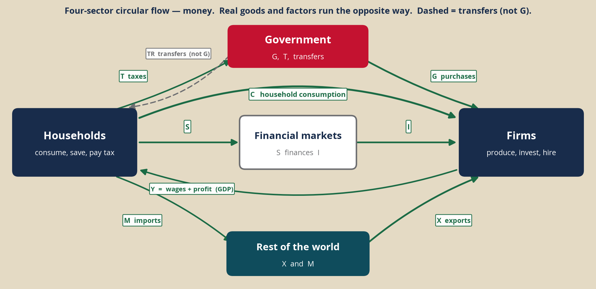
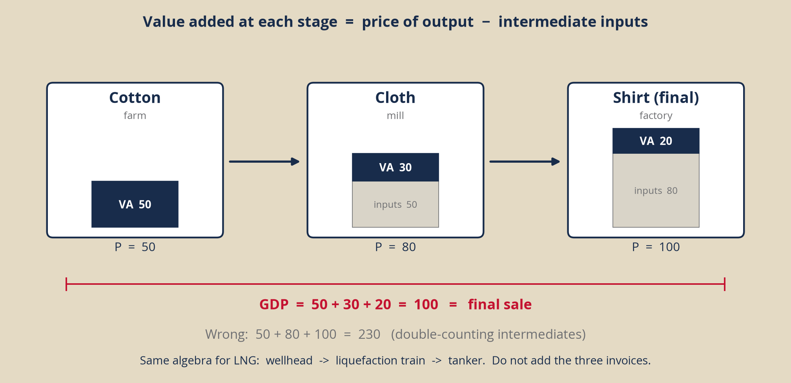

<!DOCTYPE html>
<html lang="en">
<head>
<meta charset="UTF-8" />
<meta name="viewport" content="width=device-width, initial-scale=1" />
<title>National accounts studio — 73-103</title>
<link rel="preconnect" href="https://fonts.googleapis.com" />
<link rel="preconnect" href="https://fonts.gstatic.com" crossorigin />
<link href="https://fonts.googleapis.com/css2?family=Source+Sans+3:wght@400;500;600;700&family=Source+Serif+4:opsz,wght@8..60,500;8..60,600;8..60,700&family=IBM+Plex+Mono:wght@400;500;600&display=swap" rel="stylesheet" />
<link rel="stylesheet" href="https://cdn.jsdelivr.net/npm/katex@0.16.21/dist/katex.min.css" />
<script src="https://cdn.jsdelivr.net/npm/katex@0.16.21/dist/katex.min.js"></script>
<script src="https://cdn.plot.ly/plotly-2.35.2.min.js"></script>
<style>
:root{
  --paper:#F3EEE3; --ink:#141A24; --muted:#5C6570; --rule:#C9C1B2;
  --navy:#182C4B; --red:#C41230; --card:#FFFcf6; --ok:#1B6B45; --warn:#8A4B12;
  --mono:"IBM Plex Mono",ui-monospace,monospace;
  --serif:"Source Serif 4",Georgia,serif;
  --sans:"Source Sans 3",system-ui,sans-serif;
}
*{box-sizing:border-box}
html,body{height:100%;margin:0}
body{font-family:var(--sans);background:var(--paper);color:var(--ink);-webkit-font-smoothing:antialiased}
.app{display:grid;grid-template-columns:268px 1fr;height:100%}
aside{background:var(--navy);color:#E8E4DC;padding:1.35rem 1.05rem 2rem;overflow:auto}
aside .kicker{font-size:.68rem;letter-spacing:.14em;text-transform:uppercase;color:#A9B4C4}
aside h1{font-family:var(--serif);font-size:1.28rem;font-weight:600;margin:.35rem 0 .15rem;color:#fff;letter-spacing:-.02em}
aside .meta{font-size:.75rem;color:#A9B4C4;line-height:1.45;margin-bottom:1.2rem}
aside nav button{display:block;width:100%;text-align:left;border:0;background:transparent;color:#C5CDD8;padding:.42rem .5rem;margin:0;border-radius:4px;font:500 .84rem/1.3 var(--sans);cursor:pointer}
aside nav button:hover{background:rgba(255,255,255,.06);color:#fff}
aside nav button.on{background:#fff;color:var(--navy)}
aside nav .n{display:inline-block;width:1.35rem;color:#8B97A8;font-family:var(--mono);font-size:.72rem}
aside .foot{margin-top:1.4rem;font-size:.7rem;color:#8B97A8;line-height:1.45}
main{overflow:auto;padding:1.6rem 2rem 3rem}
h2{font-family:var(--serif);font-weight:600;font-size:1.55rem;margin:0 0 .35rem;letter-spacing:-.02em}
h3{font-family:var(--serif);font-weight:600;font-size:1.05rem;margin:1.1rem 0 .4rem}
.lead{color:var(--muted);font-size:.95rem;max-width:48rem;line-height:1.5;margin:0 0 1.1rem}
.grid{display:grid;grid-template-columns:1.05fr .95fr;gap:1.05rem}
.grid3{display:grid;grid-template-columns:1fr 1fr 1fr;gap:.85rem}
@media(max-width:1080px){.app{grid-template-columns:1fr}aside{display:none}main{padding:1rem}.grid,.grid3{grid-template-columns:1fr}}
.panel{background:var(--card);border:1px solid var(--rule);padding:1.05rem 1.15rem 1.2rem}
.eq{margin:.55rem 0 .7rem;overflow-x:auto}
.mono{font-family:var(--mono)}
.big{font:600 1.65rem/1.1 var(--mono);color:var(--navy)}
p,li{font-size:.9rem;line-height:1.55}
.hint{color:var(--muted);font-size:.8rem}
label.row{display:grid;grid-template-columns:11.2rem 1fr 3.4rem;gap:.55rem;align-items:center;margin:.28rem 0;font-size:.82rem;color:var(--muted)}
input[type=range]{width:100%}
input[type=number],select{font:500 .85rem var(--mono);padding:.22rem .4rem;border:1px solid var(--rule);background:#fff;color:var(--ink);width:5.4rem}
table{width:100%;border-collapse:collapse;font-size:.84rem}
th{background:var(--navy);color:#fff;text-align:left;padding:.42rem .55rem;font-weight:600}
td{border-bottom:1px solid var(--rule);padding:.42rem .55rem;vertical-align:top}
.btn{border:1px solid var(--navy);background:var(--navy);color:#fff;padding:.38rem .75rem;font:600 .8rem var(--sans);cursor:pointer}
.btn.ghost{background:transparent;color:var(--navy)}
.ok{color:var(--ok)}.bad{color:var(--red)}
.reveal{display:none;margin-top:.55rem;padding:.7rem .8rem;background:#EEF5EF;border-left:3px solid var(--ok);font-size:.86rem}
.reveal.show{display:block}
.q{border-top:1px solid var(--rule);padding:.85rem 0}
.q h4{margin:0 0 .25rem;font-size:.95rem;font-family:var(--serif)}
.tag{font:500 .68rem/1 var(--mono);letter-spacing:.04em;text-transform:uppercase;color:var(--muted);margin-bottom:.25rem}
img.fig{width:100%;border:1px solid var(--rule);background:var(--paper)}
.tacc{display:grid;grid-template-columns:repeat(5,1fr);gap:.35rem;margin:.6rem 0}
.tacc div{border:1px solid var(--rule);padding:.45rem .3rem;text-align:center}
.tacc .h{background:var(--navy);color:#fff;font-size:.78rem}
.tacc .v{font:600 1.05rem var(--mono)}
</style>
</head>
<body>
<div class="app">
<aside>
  <div class="kicker">73-103 · CMU-Q</div>
  <h1>National accounts studio</h1>
  <p class="meta">After Wednesday 26 August. A study instrument, not a submission and not Monday’s quiz.</p>
  <nav id="nav"></nav>
  <p class="foot">Sources: World Bank WDI; IMF; gold lecture algebra; S26 question bank; Quiz 1 / midterm grain. Type IV countries are not the quiz set.</p>
</aside>
<main id="main"></main>
</div>
<script>
const MODS = [
  ["Identity","id"],
  ["Functions","fn"],
  ["Flow & value added","flow"],
  ["Classification","cls"],
  ["Qatar prints","qat"],
  ["Nominal, real, deflator","nr"],
  ["PPP and GNI","ppp"],
  ["Problem set","ps"],
  ["Cases","cs"]
];
let mod = "id";
const nav = document.getElementById("nav");
MODS.forEach(([lab,id],i)=>{
  const b=document.createElement("button");
  b.innerHTML=`<span class="n">${String(i+1).padStart(2,"0")}</span> ${lab}`;
  b.onclick=()=>{mod=id;render()};
  nav.appendChild(b);
});
function ktx(tex){const d=document.createElement("div");d.className="eq";try{katex.render(tex,d,{displayMode:true,throwOnError:false})}catch(e){d.textContent=tex}return d.outerHTML}
function slider(lab,id,v,min,max,step){
  return `<label class="row"><span>${lab}</span><input type="range" min="${min}" max="${max}" step="${step||1}" value="${v}" id="${id}" oninput="upd()"><span class="mono" id="${id}v">${v}</span></label>`;
}
function render(){
  [...nav.children].forEach((b,i)=>b.classList.toggle("on", MODS[i][1]===mod));
  const el=document.getElementById("main");
  el.innerHTML = ({id:idHTML,fn:fnHTML,flow:flowHTML,cls:clsHTML,qat:qatHTML,nr:nrHTML,ppp:pppHTML,ps:psHTML,cs:csHTML})[mod]();
  requestAnimationFrame(()=>{
    if(mod==="id"||mod==="fn") upd();
    if(mod==="qat") drawQat();
    if(mod==="nr") updNR();
    if(mod==="ppp"){updPPP();updGNI()}
  });
}
function idHTML(){
  return `<h2>The expenditure identity</h2>
  <p class="lead">This is how we <em>count</em>. It is not a theory of behavior. Inventories sit in I so that output still equals expenditure when firms produce more than they sell.</p>
  <div class="grid">
    <div class="panel">
      ${ktx("Y \\equiv C + I + G + (X-M)")}
      ${slider("C  households","C",68,0,120)}
      ${slider("I  capital + Δ inventories","I",22,0,80)}
      ${slider("G  purchases (not transfers)","G",18,0,60)}
      ${slider("X  exports","X",40,0,90)}
      ${slider("M  imports","M",28,0,90)}
      <p class="hint">A pension is not G. A QNB share is not I. A used Land Cruiser is not GDP.</p>
    </div>
    <div class="panel">
      <h3>Implied output</h3>
      <div class="big" id="Y">120</div>
      <p class="hint" id="ystory"></p>
      <div id="pie" style="height:250px"></div>
      <p>Classroom shares (gold): US C 68 / I 18 / G 17 / NX −3. Qatar C 22 / I 38 / G 12 / NX +28. Reproduce either mix, then break it.</p>
    </div>
  </div>`;
}
function fnHTML(){
  return `<h2>From identities to functions</h2>
  <p class="lead">Wednesday’s object is still a count. These are the first behavioral pieces we will close later. Do not solve for Y today.</p>
  <div class="grid">
    <div class="panel">
      ${ktx("C=C_0+c_1(Y-T),\\quad 0<c_1<1")}
      ${ktx("I=I_0-b i,\\quad b>0")}
      ${ktx("G=\\bar G")}
      ${ktx("NX=X(Y^{*},\\varepsilon)-IM(Y,\\varepsilon)\\;\\approx\\; NX_0-nY")}
      <p>ε follows Blanchard: <span class="mono">ε = EP/P*</span>, the price of domestic goods in terms of foreign goods. A real appreciation (ε ↑) reduces NX.</p>
      ${slider("Y  (we are not solving)","Yf",100,40,180)}
      ${slider("T  taxes","T",20,0,60)}
      ${slider("C₀","C0",15,0,40)}
      ${slider("c₁  MPC ×100","c1",60,10,90)}
      ${slider("I₀","I0",30,0,60)}
      ${slider("i  percent","i",5,0,15,.5)}
      ${slider("b  interest-sensitivity","b",2,0,6,.5)}
      ${slider("Ḡ","Gbar",18,0,50)}
      ${slider("NX₀","NX0",12,-20,40)}
      ${slider("n  ×100","n",15,0,40)}
    </div>
    <div class="panel">
      <h3>Implied components</h3>
      <table>
        <tr><th>Object</th><th>Value</th></tr>
        <tr><td>Disposable income Y − T</td><td class="mono" id="yd">—</td></tr>
        <tr><td>C = C₀ + c₁(Y − T)</td><td class="mono" id="Cf">—</td></tr>
        <tr><td>I = I₀ − b i</td><td class="mono" id="If">—</td></tr>
        <tr><td>G = Ḡ</td><td class="mono" id="Gf">—</td></tr>
        <tr><td>NX = NX₀ − n Y</td><td class="mono" id="NXf">—</td></tr>
        <tr><td>C+I+G+NX  (not an equilibrium)</td><td class="mono" id="Zf">—</td></tr>
      </table>
      <p class="hint" id="fnnote"></p>
      <p>Goods-market week: set Y = C+I+G+NX and solve for Y given i. Financial-market week: how i is set. Together: IS–LM. Today we only learn the pieces.</p>
    </div>
  </div>`;
}
function flowHTML(){
  return `<h2>Circular flow and value added</h2>
  <p class="lead">Money one way; goods and factors the other. Both money loops are GDP. Transfers are not G.</p>
  <div class="grid">
    <div class="panel">
      <h3>Four-sector flow</h3>
      
      <p class="hint">Trace C, I, G, X, M. Dashed TR is not a purchase.</p>
    </div>
    <div class="panel">
      <h3>Value added</h3>
      ${ktx("\\mathrm{VA}_i = P_i Q_i - \\text{intermediates}_i,\\qquad Y=\\sum_i \\mathrm{VA}_i")}
      
      <label class="row"><span>Final shirt price</span><input type="range" id="shirtP" min="80" max="160" value="100" oninput="updShirt()"><span class="mono" id="shirtPv">100</span></label>
      <p>GDP by value added = <span class="big" id="shirtY">100</span></p>
      <p class="hint" id="shirtH"></p>
      <p>LNG is the same algebra: wellhead → liquefaction → tanker. Do not add the three invoices.</p>
    </div>
  </div>`;
}
const REC=[
  ["World Cup hotel night, EU visitor","X","Export of a service produced on the territory. X, hence GDP."],
  ["North Field East LNG train (domestic VA)","I","Fixed capital formation. I."],
  ["2019 Land Cruiser, Qatar Living","not","Used good. Not this year’s GDP. A dealer’s margin would be."],
  ["Teacher salary, Ministry of Education","G","Purchase of a service. Not a transfer."],
  ["100 QNB shares","not","Financial transaction. Not I."],
  ["New iPhone, assembled abroad, sold in Doha","CM","C and −M. GDP = retailer’s margin only."],
  ["New Qatar Airways aircraft, imported","IM","I and −M. Capital on the territory, import leak."],
  ["Remittance home by a migrant worker","GNI","Not C in Qatar. Can move GNI relative to GDP."],
  ["Unsold new cars on a Doha lot","INV","+I inventories. When sold: −I and +C (or +X)."],
  ["State pension paid to a retiree","not","Transfer. Not G. Becomes C when spent."],
  ["Imputed rent on an owner-occupied villa","C","C includes imputed rent. Not the purchase price."],
  ["Joseph buys last year’s tablet from a local maker","INV0","I_Joseph +800, inventories −800. I and GDP unchanged (gold AL2-C)."]
];
function clsHTML(){
  const opts=`<option value="">—</option><option value="C">C</option><option value="I">I</option><option value="G">G</option><option value="X">X</option><option value="CM">C and −M</option><option value="IM">I and −M</option><option value="INV">+I inventories</option><option value="INV0">inventory wash</option><option value="GNI">GNI, not GDP</option><option value="not">Not GDP</option>`;
  return `<h2>Classification</h2>
  <p class="lead">Same grain as the exam. The letter is not enough — the mechanism is what is graded.</p>
  <div class="panel">
    ${REC.map((r,i)=>`<div style="display:grid;grid-template-columns:1fr 12rem;gap:.6rem;align-items:center;padding:.35rem 0;border-bottom:1px solid var(--rule)"><div>${r[0]}</div><select id="rc${i}">${opts}</select></div>`).join("")}
    <p style="margin-top:.8rem"><button class="btn" onclick="gradeRec()">Grade</button> <span id="rsc" class="mono"></span></p>
    <div class="reveal" id="rrv"></div>
  </div>`;
}
function qatHTML(){
  return `<h2>Qatar — two prints, one economy</h2>
  <p class="lead">World Bank WDI. In 2022–23 dollar GDP fell and volume grew. That is a (P, Q) case, not a story you can read off the dollar number.</p>
  <div class="grid">
    <div class="panel">
      <p><button class="btn ghost" onclick="qMode='wc';drawQat()">2020–24 (World Cup)</button>
         <button class="btn ghost" onclick="qMode='oil';drawQat()">2013–16 (oil)</button></p>
      <div id="qc" style="height:360px"></div>
      <p class="hint">NY.GDP.MKTP.CD (bn current USD) and NY.GDP.MKTP.KD.ZG (real growth %).</p>
    </div>
    <div class="panel">
      <h3>Graph question (Type III)</h3>
      <p>2022→23: nominal $235.7bn → $213.0bn, real +1.19%. Which of the five (P, Q) cases? What was 2023 GDP-deflator inflation?</p>
      <p><button class="btn" onclick="qrev.classList.add('show')">Mechanism</button></p>
      <div class="reveal" id="qrev">
        Closest to <b>Q up, P down</b> in dollar terms. Deflator inflation 2023 = <b>−10.7%</b> (NY.GDP.DEFL.KD.ZG).<br>
        2014–16: nominal $206bn → $152bn, real still +4.1 / +4.8 / +3.1. Hydrocarbon <em>prices</em>, not a quantity collapse.<br>
        IMF Country Report 24/43: World Cup event ≈ 1% of 2022 GDP (flow: hotels/X). Infrastructure $200–300bn over a decade (stock: I). Do not put a decade of capital into one quarter’s NX.
      </div>
    </div>
  </div>`;
}
function nrHTML(){
  return `<h2>Nominal GDP, real GDP, the deflator</h2>
  <p class="lead">Two goods. Base year = year 1. Gold used baklava / Umm Ali; the algebra is the same. Midterm grain: smartphones and coffee live in the problem set.</p>
  <div class="grid">
    <div class="panel">
      ${ktx("\\text{Nominal}=\\sum P_t Q_t\\qquad \\text{Real}=\\sum P_{\\text{base}} Q_t\\qquad \\text{Deflator}=100\\times N/R")}
      <table>
        <tr><th></th><th>P karak</th><th>Q karak</th><th>P dates</th><th>Q dates</th></tr>
        <tr><td>Year 1 (base)</td><td>10</td><td>100</td><td>20</td><td>50</td></tr>
        <tr><td>Year 2</td>
          <td><input type="number" id="pk" value="12" oninput="updNR()"></td>
          <td><input type="number" id="qk" value="110" oninput="updNR()"></td>
          <td><input type="number" id="pd" value="22" oninput="updNR()"></td>
          <td><input type="number" id="qd" value="55" oninput="updNR()"></td></tr>
      </table>
    </div>
    <div class="panel">
      <p>Nominal Y1 <span class="big" id="n1">2000</span></p>
      <p>Nominal Y2 <span class="big" id="n2">—</span></p>
      <p>Real Y2 <span class="big" id="r2">—</span></p>
      <p>Deflator Y2 <span class="big" id="df">—</span></p>
      <p>Inflation (deflator) <span class="big" id="inf">—</span></p>
      <p class="hint" id="nstory"></p>
      <p>Five cases if nominal rises: (Q↑ P̄), (P↑ Q̄), both ↑, P↑ faster than Q↓, Q↑ faster than P↓. Qatar 2022→23 is Q↑ P↓ in dollars — nominal can fall.</p>
    </div>
  </div>`;
}
function pppHTML(){
  return `<h2>PPP and GNI</h2>
  <p class="lead">Forex converts invoices. PPP converts living standards. GNI moves net primary income. Ireland’s 2015 “leprechaun” print is why the distinction is exam material.</p>
  <div class="grid">
    <div class="panel">
      ${ktx("\\text{PPP rate}=P_{\\text{local}}/P_{\\$}\\qquad \\text{PPP GDP}=\\text{Nominal}_{\\text{LCU}}/\\text{PPP rate}")}
      <label class="row"><span>India basket (INR)</span><input type="number" id="pIN" value="100" oninput="updPPP()"><span></span></label>
      <label class="row"><span>US basket (USD)</span><input type="number" id="pUS" value="5" oninput="updPPP()"><span></span></label>
      <label class="row"><span>Market INR / USD</span><input type="number" id="fx" value="83" oninput="updPPP()"><span></span></label>
      <label class="row"><span>India nominal (tn INR)</span><input type="number" id="nomIN" value="330" oninput="updPPP()"><span></span></label>
      <p>PPP rate <span class="mono" id="pppr">20</span> INR per international dollar</p>
      <p>GDP at market FX <span class="big" id="mkt">—</span> tn USD</p>
      <p>GDP at PPP <span class="big" id="pppV">—</span> tn int’l $</p>
      <p class="hint">Haircuts versus phones. World Bank 2023: India $3.50 tn market vs $14.17 tn PPP.</p>
    </div>
    <div class="panel">
      <h3>GNI versus GDP</h3>
      ${ktx("\\mathrm{GNI}=\\mathrm{GDP}+\\text{net primary income from abroad}")}
      <label class="row"><span>Outward remittances</span><input type="range" id="rem" min="0" max="40" value="8" oninput="updGNI()"><span id="remv" class="mono">8</span></label>
      <p>GDP (fixed) <span class="big">213</span></p>
      <p>GNI <span class="big" id="gni">205</span></p>
      <p class="hint">World Bank 2023: Qatar GDP $213bn, GNI $207bn. Ireland 2023: GDP per capita far above GNI per capita — IP onshoring, not Irish living standards.</p>
      
    </div>
  </div>`;
}
const PS=[
  {id:"g1",tag:"GDP-1 · analytical · easy",q:"Three goods in 2024: bread 1,000 at $3; haircuts 500 at $20; computers 100 at $800. (a) Nominal GDP by expenditure? (b) A student wants to add the bread used in restaurant sandwiches. Why is that wrong? (c) In 2025 computer prices fall to $600, quantities unchanged. What happens to nominal GDP and to real GDP with 2024 as base?",
   h:"Final goods only. Real GDP holds base prices fixed.",
   a:"(a) 3,000 + 10,000 + 80,000 = <b>$93,000</b>. (b) Sandwich bread is an intermediate. Its value is already in the restaurant’s final sale; adding it double-counts. (c) Nominal GDP falls by $20,000 to $73,000. Real GDP (2024 prices) is unchanged at $93,000 — only P moved."},
  {id:"g2",tag:"GDP-2 · components · intermediate",q:"Alphaland: C=800, I=200, G=150, X=100, M=150. Betaland: C=150, I=280, G=80, X=400, M=210 (all $bn). Compute Y and NX, then shares. Classify each against the US (C≈68%, NX≈−3%) and Qatar (C≈22%, NX≈+28%). A plant that will serve export markets: which economy, and why?",
   h:"Y = C+I+G+(X−M). Shares are component / Y.",
   a:"Alphaland: NX=−50, Y=1,100. Shares C 73%, I 18%, G 14%, NX −5% — consumption-driven, US-like. Betaland: NX=+190, Y=700. Shares C 21%, I 40%, G 11%, NX +27% — export-driven, Qatar-like. For an export plant, Betaland’s existing export machine and surplus are the relevant structure; do not confuse that with living standards."},
  {id:"g3",tag:"GDP-3 · smartphones & coffee · midterm grain",q:"2022: 1,000 phones at $500, 10,000 kg coffee at $10. 2023: 1,100 at $480 and 10,500 at $12. 2024: 1,200 at $450 and 11,000 at $15. Base=2022. Compute nominal, real, and the deflator for each year. Then 2022–24: %ΔN, %ΔR, cumulative deflator inflation. Why do the three numbers differ?",
   h:"Nominal uses that year’s P and Q. Real uses 2022 prices. Deflator = 100 × N/R.",
   a:"Nominal: 2022 $600,000; 2023 1,100×480+10,500×12=$654,000; 2024 1,200×450+11,000×15=$705,000. Real (2022 P): 2022 $600,000; 2023 1,100×500+10,500×10=$655,000; 2024 1,200×500+11,000×10=$710,000. Deflator: 100, 99.85, 99.30. %ΔN = +17.5%; %ΔR = +18.3%; deflator inflation ≈ −0.7%. Phone prices fell enough to offset coffee inflation. Quantity growth is in real GDP; the deflator isolates prices."},
  {id:"al2a",tag:"Gold AL2 · cookies / phones",q:"Cookies P₁=1 Q₁=900; phones P₁=900 Q₁=185. Nominal GDP in the base year?",
   h:"Current P × current Q.",
   a:"1×900 + 900×185 = <b>167,400</b>."},
  {id:"al2b",tag:"Gold AL2 · Nylah",q:"Nylah spends $1,200 on a new smartphone for her firm, built in China. I, NX, GDP?",
   h:"Capital good, imported.",
   a:"I +1,200, M +1,200 so NX −1,200, GDP unchanged. Location of production, not ownership of the firm. Same algebra as the North Field imported modules."},
  {id:"al2c",tag:"Gold AL2 · Joseph / inventories",q:"Joseph buys last year’s tablet on sale from a local manufacturer for $800. Why are I and GDP unchanged?",
   h:"Inventory wash.",
   a:"Joseph’s I +800, manufacturer inventories −800. Production was last year. A used (already-produced) good is not this year’s GDP."},
  {id:"gm",tag:"Gold AL2-D · GM",q:"GM produces $500m of cars; consumers buy $470m. GDP and components?",
   h:"Unsold output is inventory investment.",
   a:"C +470, I_inv +30, GDP +500. Do not report GDP as sales."},
  {id:"souq",tag:"Lecture · Souq Waqif",q:"A London tourist pays QR 400 for dinner in Doha. ΔC, ΔI, ΔG, ΔNX, ΔY?",
   h:"Residency of the buyer.",
   a:"C 0, I 0, G 0, NX +400, Y +400. It is X, not C. A Qatari household paying the same bill would have been C."},
  {id:"qat23",tag:"Type III · Qatar 2022–23",q:"Nominal $235.7bn → $213.0bn, real +1.19%, deflator −10.7%. A finance ministry watches debt/GDP in dollars. What happened to the denominator, and is that a recession?",
   h:"Nominal/real identity. Volume versus dollar prices.",
   a:"The dollar denominator shrank because hydrocarbon prices (the deflator in USD) fell, not because Q collapsed. Real GDP still grew. Debt/GDP in dollars can jump without a quantity recession. That is a valuation story unless Q also falls."}
];
function psHTML(){
  const done=JSON.parse(localStorage.getItem("gdp-ps")||"{}");
  const n=Object.values(done).filter(Boolean).length;
  return `<h2>Problem set</h2>
  <p class="lead">Drawn from the S26 practice bank (GDP-1 to GDP-3), gold AL2, and Wednesday’s receipts. Work them as you would on an exam: mechanism, then the number. ${n}/${PS.length} marked done in this browser.</p>
  ${PS.map(e=>`<article class="q" id="${e.id}">
    <div class="tag">${e.tag}</div>
    <h4>${e.q}</h4>
    <p><button class="btn ghost" onclick="tog('h${e.id}')">Hint</button>
       <button class="btn ghost" onclick="tog('a${e.id}')">Worked answer</button>
       <button class="btn ghost" onclick="mark('${e.id}')">${done[e.id]?"Done":"Mark done"}</button></p>
    <div class="reveal" id="h${e.id}">${e.h}</div>
    <div class="reveal" id="a${e.id}">${e.a}</div>
  </article>`).join("")}`;
}
function csHTML(){
  return `<h2>Cases — exam grain</h2>
  <p class="lead">S26 bank GDP-4 through GDP-10, midterm Venezuela, Quiz 1 Type IV. Write as you would in the book: concept, mechanism, judgment. Not Argentina / Indonesia / Mexico / Poland (older quiz countries).</p>

  <article class="q"><div class="tag">GDP-4 · Ireland · difficult</div>
  <h4>2023: Ireland GDP $545bn ($106,771 per person); GNI $400bn; modified GNI* $310bn. Germany’s GNI exceeds its GDP. (a) Why can GNI sit 27% below GDP? (b) How much of Ireland’s GDP is IP/multinational accounting rather than domestic activity? (c) A fund pitches “highest GDP per capita in the EU.” Evaluate.</h4>
  <p><button class="btn ghost" onclick="tog('aie')">Worked answer</button></p>
  <div class="reveal" id="aie">GNI = GDP + net primary income. Onshored IP and multinational profits are produced (in the accounts) in Ireland and remitted to foreign owners, so GNI &lt; GDP. Germany is a net recipient of factor income. GDP − GNI* ≈ $235bn, about 43% of GDP — the CSO’s own correction. GDP per capita is the wrong living-standard and the wrong investment screen; look at GNI*, wages, and the corporate-tax base. Qatar’s GDP–GNI gap is the same species (foreign-owned hydrocarbon capital), smaller.</div></article>

  <article class="q"><div class="tag">GDP-8 · Venezuela · midterm grain</div>
  <h4>2013–21: real GDP index 100 → 27 (−73%). Nominal USD GDP $371bn → $47bn. 6.1 million emigrants; poverty 25% → 94%. (a) Why is nominal GDP in bolívares meaningless? (b) How does skilled emigration bias remaining GDP per capita? (c) An economist says “ignore GDP, watch social indicators.” Evaluate.</h4>
  <p><button class="btn ghost" onclick="tog('ave')">Worked answer</button></p>
  <div class="reveal" id="ave">(a) Hyperinflation makes the local-currency flow a unit without content; USD nominal still mixes volume and the oil price. (b) If emigrants are positively selected, the remaining population is less productive — GDP per capita understates the welfare collapse of those who left and can overstate productivity of those who stayed. (c) GDP captures the production collapse; social indicators capture how it was distributed. Use both. The 73% real decline is not “just a number.”</div></article>

  <article class="q"><div class="tag">GDP-7 · Nigeria rebasing · difficult</div>
  <h4>2014 rebase (1990 → 2010 base): measured GDP +89% overnight; telecom 0.9% → 8.7% of GDP; Nollywood newly measured. A critic: “nothing real changed — statistical manipulation.” Evaluate. What did rebase change, and what did it not?</h4>
  <p><button class="btn ghost" onclick="tog('ang')">Worked answer</button></p>
  <div class="reveal" id="ang">The economy in 2013 did not jump 89% in a night. The <em>measurement</em> caught services that had been growing for years on an obsolete base. That is a legitimate statistical revision, not a fiscal trick — and it is why long-span GDP comparisons need a consistent base. Informal activity remains undercounted either way. International attention can be justified as “we now see a larger services economy,” not as “Nigeria became 89% richer on Tuesday.”</div></article>

  <article class="q"><div class="tag">GDP-6 · Japan 1995–2023 · difficult</div>
  <h4>Real GDP +28% since 1995; nominal USD GDP $5.46tn → $4.21tn. Population 125m → 124m. (a) How can real rise and dollar-nominal fall? (b) Total GDP vs per capita as a policy target.</h4>
  <p><button class="btn ghost" onclick="tog('ajp')">Worked answer</button></p>
  <div class="reveal" id="ajp">(a) Yen deflation plus a weaker yen against the dollar. Real (yen, chained) can rise while the dollar value of that output falls. (b) Per capita is the living-standard metric; total GDP is the metric for fiscal capacity, debt, and weight in the world. A shrinking population can raise per capita while shrinking the tax base. Pick the object to match the question.</div></article>

  <article class="q"><div class="tag">GDP-5 · Saudi Vision 2030 · difficult</div>
  <h4>Oil sector 42% → 28% of GDP (2016–24); non-oil private 40% → 50%; nominal GDP $644bn → $1,067bn; non-oil real growth 5.8% vs overall 4.1%. An investor worries that headline GDP is “just oil prices.” Using the data, argue for or against. What extra series would you want?</h4>
  <p><button class="btn ghost" onclick="tog('asa')">Worked answer</button></p>
  <div class="reveal" id="asa">Headline nominal GDP mixes oil prices with volume. The <em>share</em> shift and the gap between non-oil growth (5.8%) and overall (4.1%) are the diversification evidence — they can be true even if oil still dominates the <em>level</em>. Tourism and FDI prints are corroboration, not proof. You still want: non-oil GDP in constant prices, employment in tradable services, and the current-account dependence on hydrocarbons. Qatar’s mix (NX +28%, C 22%) is the GCC comparison, not the US mix.</div></article>

  <article class="q"><div class="tag">GDP-9 · Singapore · difficult</div>
  <h4>Trade/GDP = 311%. How can (X+M)/Y exceed 1? If Singaporeans worked US hours (1,811 vs 2,238), what happens to GDP? Is high GDP per capita high welfare?</h4>
  <p><button class="btn ghost" onclick="tog('asg')">Worked answer</button></p>
  <div class="reveal" id="asg">(X+M)/Y can exceed 1 because re-exports and entrepôt trade count in both X and M; GDP is value added, not gross shipments. Fewer hours would cut measured GDP (leisure is not in Y). High GDP per capita with long hours and a 0.44 Gini is not the same object as welfare. Use GDP for production; use hours and distribution for the living-standard question.</div></article>

  <article class="q"><div class="tag">GDP-10 · India vs UK · challenge</div>
  <h4>2023: India GDP $3.73tn vs UK $3.33tn; population 1,428m vs 67m; GDP per capita $2,612 vs $49,701; informal share ~50% vs ~10%; female LFP 24% vs 72%. When is total GDP the right metric, and when is per capita? What does GDP miss?</h4>
  <p><button class="btn ghost" onclick="tog('ain')">Worked answer</button></p>
  <div class="reveal" id="ain">Total GDP: market size, geopolitics, tax base. Per capita: living standards, development. India can be fifth-largest and 139th per person at once — both sentences are true. Informal activity and home production (especially with low female LFP) mean official GDP understates activity and mis-measures welfare. Catch-up in per capita at 7% vs 0.1% still takes many decades; do the log arithmetic before celebrating rank.</div></article>

  <article class="q"><div class="tag">Type IV · production vs sales · quiz grain, not quiz countries</div>
  <h4>You advise a firm that invoices in USD. Choose one country to locate a labor-intensive plant, then say whether that country is a good sales market for a $1,000 device. World Bank 2023. Write 150–250 words.</h4>
  <table>
    <tr><th></th><th>Dollar GDP</th><th>PPP GDP</th><th>USD / person</th><th>PPP / market</th></tr>
    <tr><td>Qatar</td><td>$0.21 tn</td><td>$0.34 tn</td><td>$80,200</td><td>1.6×</td></tr>
    <tr><td>India</td><td>$3.50 tn</td><td>$14.17 tn</td><td>$2,430</td><td>4.0×</td></tr>
    <tr><td>Vietnam</td><td>$0.43 tn</td><td>$1.51 tn</td><td>—</td><td>3.5×</td></tr>
    <tr><td>Kenya</td><td>$0.11 tn</td><td>$0.35 tn</td><td>—</td><td>3.2×</td></tr>
  </table>
  <p><button class="btn" onclick="crev.classList.add('show')">Rubric (not a key)</button></p>
  <div class="reveal" id="crev">
    <b>3</b> names the PPP–market gap as a price-level fact, not “India is poor.”<br>
    <b>3</b> mechanism: a dollar buys more local labor/rent where PPP ≫ market; luxury demand needs dollar incomes.<br>
    <b>2</b> GDP connection: per-person USD vs PPP GDP.<br>
    <b>2</b> business: production vs sales can point at different countries.<br>
    India/Vietnam: cheap inputs, thin luxury market. Qatar: expensive labor, richer consumers. Kenya: similar gap to Vietnam at smaller scale. Monday’s quiz will use a new figure.
  </div></article>
`;
}

function upd(){
  if(mod==="id"){
    const g=id=>+document.getElementById(id).value;
    const C=g("C"),I=g("I"),G=g("G"),X=g("X"),M=g("M");
    ["C","I","G","X","M"].forEach(k=>document.getElementById(k+"v").textContent=g(k));
    const Y=C+I+G+X-M;
    document.getElementById("Y").textContent=Y;
    document.getElementById("ystory").textContent = Y<0 ? "Imports exceed C+I+G+X. Possible in the identity; not a typical year." : "Y = C+I+G+X−M. Always.";
    Plotly.react("pie",[{type:"pie",labels:["C","I","G","X","M (subtract)"],values:[C,I,G,X,M],
      marker:{colors:["#182C4B","#C41230","#6D6E71","#1B6B45","#8A4B12"],line:{color:"#F3EEE3",width:1}},
      textinfo:"label+percent",sort:false}],
      {margin:{t:8,b:8,l:8,r:8},paper_bgcolor:"rgba(0,0,0,0)",font:{color:"#141A24",family:"Source Sans 3"}},
      {displayModeBar:false,responsive:true});
  }
  if(mod==="fn"){
    const g=id=>+document.getElementById(id).value;
    const Y=g("Yf"),T=g("T"),C0=g("C0"),c1=g("c1")/100,I0=g("I0"),i=g("i"),b=g("b"),G=g("Gbar"),NX0=g("NX0"),n=g("n")/100;
    ["Yf","T","C0","c1","I0","i","b","Gbar","NX0","n"].forEach(k=>document.getElementById(k+"v").textContent=g(k));
    const C=C0+c1*(Y-T), I=I0-b*i, NX=NX0-n*Y, Z=C+I+G+NX;
    yd.textContent=(Y-T).toFixed(1);
    Cf.textContent=C.toFixed(1);
    If.textContent=I.toFixed(1);
    Gf.textContent=G.toFixed(1);
    NXf.textContent=NX.toFixed(1);
    Zf.textContent=Z.toFixed(1);
    fnnote.textContent = Math.abs(Z-Y)<0.5 ? "C+I+G+NX equals the Y you fed in — a coincidence of the sliders, not goods-market equilibrium." :
      "C+I+G+NX = "+Z.toFixed(1)+" ≠ Y = "+Y+". That gap is why we will later solve for Y. Today we do not.";
  }
}
function updShirt(){
  const P=+shirtP.value; shirtPv.textContent=P;
  const mill=30, cotton=50, factory=P-80;
  shirtY.textContent=cotton+mill+factory;
  shirtH.textContent=`VA: cotton 50 + mill 30 + factory ${factory} = ${cotton+mill+factory}. Sum of invoices = ${50+80+P} (wrong).`;
}
function gradeRec(){
  let ok=0; const lines=[];
  REC.forEach((r,i)=>{const v=document.getElementById("rc"+i).value; const hit=v===r[1]; if(hit)ok++;
    lines.push(`${hit?"<span class=ok>✓</span>":"<span class=bad>✗</span>"} ${r[0]} — <b>${r[2]}</b>`);});
  rsc.textContent=ok+" / "+REC.length+"  (the mechanism is the grade)";
  rrv.classList.add("show"); rrv.innerHTML=lines.join("<br>");
}
const QAT_Y=[2013,2014,2015,2016,2017,2018,2019,2020,2021,2022,2023,2024];
const QAT_N=[198.7,206.2,161.7,151.7,161.1,183.3,176.4,144.4,179.7,235.7,213.0,216.3];
const QAT_G=[4.43,4.12,4.75,3.06,-1.5,1.23,0.69,-3.56,1.63,4.19,1.19,3.11];
let qMode="wc";
function drawQat(){
  const i0=qMode==="oil"?0:7, i1=qMode==="oil"?5:12;
  const y=QAT_Y.slice(i0,i1).map(String), n=QAT_N.slice(i0,i1), g=QAT_G.slice(i0,i1);
  Plotly.newPlot("qc",[
    {x:y,y:g,name:"Real growth %",type:"bar",marker:{color:"#182C4B"},yaxis:"y"},
    {x:y,y:n,name:"Nominal $bn",type:"scatter",mode:"lines+markers",line:{color:"#C41230",width:2.5},yaxis:"y2"}
  ],{margin:{t:28,b:40,l:48,r:52},legend:{orientation:"h"},
     yaxis:{title:"percent",gridcolor:"#E6DFD2"},yaxis2:{title:"bn USD",overlaying:"y",side:"right"},
     paper_bgcolor:"rgba(0,0,0,0)",plot_bgcolor:"rgba(0,0,0,0)",
     font:{color:"#141A24",family:"Source Sans 3"}},
    {displayModeBar:false,responsive:true});
}
function updNR(){
  const pk=+pk.value,qk=+qk.value,pd=+pd.value,qd=+qd.value;
  const n1v=10*100+20*50, n2=pk*qk+pd*qd, r2=10*qk+20*qd, df=100*n2/r2, inf=df-100;
  n1.textContent=n1v; n2.textContent=n2; r2.textContent=r2;
  df.textContent=df.toFixed(1); inf.textContent=inf.toFixed(1)+"%";
  nstory.textContent=`Nominal growth ${((n2-n1v)/n1v*100).toFixed(1)}%. Real growth ${((r2-n1v)/n1v*100).toFixed(1)}%. The gap is prices.`;
}
function updPPP(){
  const pIN=+document.getElementById("pIN").value,pUS=+document.getElementById("pUS").value,fx=+document.getElementById("fx").value,nom=+document.getElementById("nomIN").value;
  const rate=pIN/pUS;
  pppr.textContent=rate.toFixed(2);
  mkt.textContent=(nom/fx).toFixed(2);
  pppV.textContent=(nom/rate).toFixed(2);
}
function updGNI(){ remv.textContent=rem.value; gni.textContent=213-+rem.value; }
function tog(id){document.getElementById(id).classList.toggle("show")}
function mark(id){
  const d=JSON.parse(localStorage.getItem("gdp-ps")||"{}"); d[id]=!d[id];
  localStorage.setItem("gdp-ps",JSON.stringify(d)); render();
}
render();
</script>
</body>
</html>
